September Papers: Proper Conditioning
We're pleased to share four papers from different domains: LLM self-correction, FP8 training, generative crystals and optimisation. They are united, somewhat tenuously, by the importance of proper conditioning:
- DeepMind researchers explain how conditioning on the wrong distribution during supervised fine-tuning for self-correction is harmful but can be overcome using RL.
- A novel Smooth-SwiGLU activation "conditions" the numerics by inserting a scaling factor in just the right place, preventing late-training instability in FP8.
- The GenMS architecture that generates crystal structures for materials conditions on high-level textual and low-level structural information for high-quality generation.
- SOAP is an evolution of Shampoo, with conditioners in the name and preconditioners forming the eigenbasis for optimisation.
You can be the judge of how tenuous the connection is, but we'd encourage you to check out the summaries first or despite this.
I hope you enjoy these as much as we did. Tell us we're wrong; tell us we're right @GCResearchTeam.
We hope you enjoy this month's papers as much as we did! If you have thoughts or questions, please reach out to us at @GCResearchTeam.
Training Language Models to Self-Correct via Reinforcement Learning
The key idea
Users of LLMs will be aware that sometimes they can recognise and correct their own mistakes. This prompts the question: if the model has the capability to identify some of its own failures, can we leverage this to improve the model?
This is easier said than done. This paper shows that supervised fine-tuning (SFT) --- the dominant post-training approach for LLMs --- has some inevitable failure modes when trying to teach a model to self-correct. What's needed, and what they demonstrate, is that an RL-based approach can prevail.
This is significant: true RL has only just broken into the LLM training space, in the form of OpenAI's o1 model, but few details have been released. This work presents a significant step towards realising the benefits of RL in helping language models to reason better.
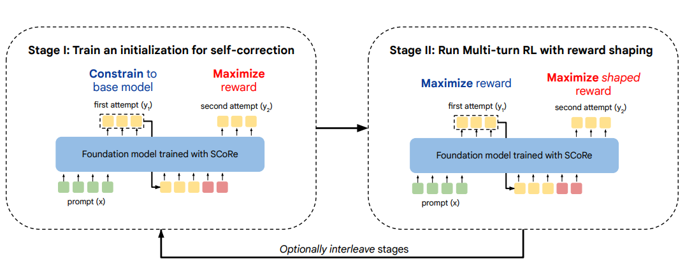
Background
The most straightforward approach to solving the self-correction problem is simply:
- Take a dataset of question-answer pairs for some reasoning task
- For each, prompt the model to generate a solution
- Evaluate each and remove those solutions which are correct
- Then prompt the model to generate a correction to the incorrect solution
- Evaluate the final solutions, and now filter out the incorrect ones
- Take this dataset of 2-stage "corrected" answers and train the model on it
This is the basis of the STaR method, which the authors use as a baseline, alongside PairSFT, which works similarly but uses arbitrary pairs of incorrect-correct responses to a given prompt as training data.
The authors test these methods and see the following:
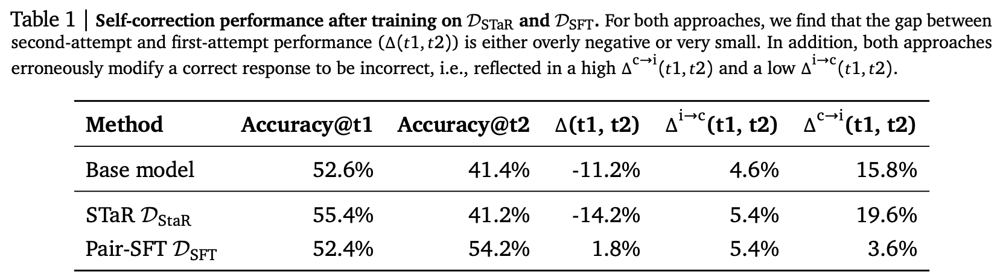
STaR slightly improves the initial attempt, but is poor at correcting --- so much so that it tends to make answers worse, not better! Pair-SFT offers a modest accuracy improvement, though this is largely down to a drop in the value of the final column, which indicates the fraction of correct responses the model ruins via wrong "corrections". So in summary: the only improvement we really see is the model learning to be much more cautious in correcting itself.
They trace these difficulties down to two problems:
- The model tends towards a minimal edit policy, where it tries to change as little as possible to avoid degrading the original response.
- The model is trained on data from its original distribution over responses, yet training causes this distribution to change, leading to distribution mismatch.
Their method
The two-stage RL-based method they design aims to target the problems outlined in turn.
Stage 1: The first stage uses RL to maximise the following objective:
Here \(\hat{r} (\mathbf{y_2}, \mathbf{y^*})\) is some "correctness" function that acts as a reward, which crucially is based on \(\mathbf{y_2}\), the model's second attempt at the problem. The KL term acts on the first attempt, encouraging the model to keep its first guess the same as the original ("reference") model.
We can see from this that the aim is to encourage the model to learn strong correction behaviour, by fixing the first attempt and optimizing just the second (approximately). This addresses the minimal edit problem.
Stage 2: Having encouraged strong correction in stage 1, the full problem is addressed in stage 2, which maximises:
Here the RL objective is over both attempts, with a weaker KL penalty over both acting as a mild regulariser. A reward-shaping step is also used here to up-weight examples where incorrect first attempts are successfully corrected.
The key difference between this and SFT is that the data used to update the model is always generated by the current model. This avoids the distribution mismatch problem.
Results
In short, it works. Results are good on maths problems, and even better on coding tasks:
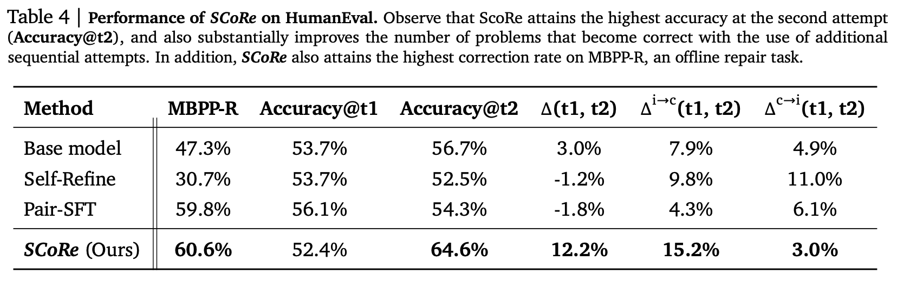
The first-attempt accuracy is slightly degraded, but the second attempt is substantially better than any other attempt by other methods. The main reason for this is shown in the second-to-last column: a large increase in incorrect answers becoming correct, which is the key objective.
The paper shows several other evaluations and ablations, making a strong case for the method.
Takeaways
This paper makes a compelling case for why supervised fine-tuning is limited as a post-training procedure, and for some problems (such as self-correction), some kind of on-policy RL is required. Carefully designed objectives are required to make this work, but it appears to significantly boost a model's ability to reason at inference time.
This is just the start. The authors consider a fairly simple problem setting: a single correction attempt on a zero-shot answer, with no supervision as to the source of error. One could imagine a similar approach with many correction attempts, possibly on chain-of-thought responses, and with more granular feedback. This promises to be a significant direction of future LLM research, with significant computational and algorithmic implications.
Scaling FP8 training to trillion-token LLMs
The key idea
Building upon recent literature on low-precision FP8 training, the authors investigate the FP8 training stability of trillion-token LLMs (a ~20-fold increase over previous published work). Uncovering a new form of critical instability, they present an improved Smooth-SwiGLU activation function which prevents activation spikes (outliers) from causing training divergence in LLMs.
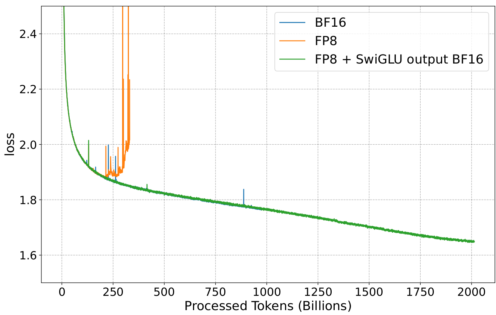
Background
Machine learning researchers, especially in AI hardware companies, have been investigating for the last couple of years which 8-bit floating formats are suitable for neural network training and inference. The literature on the subject converges towards the definition of two formats: E4M3 and E5M2. The former is used to represent weights and activations, while the latter is used for gradients, which require a higher dynamic range.
Due to the much smaller dynamic range compared to BF16 (which is commonly used in LLM training), FP8 LLM training requires ad-hoc per tensor scaling using data statistics (usually the absolute-max) in order to keep training stable.
Most of the FP8 literature has focused on small to mid-scale experiments (at most 100B tokens training), and presented in this work, late-stage LLMs training also presents numerical stability challenges, with large outliers appearing in the transformer feed-forward layer.
Their method
As presented in the figure above, instabilities appear in late FP8 training of large LLMs. In this work, the authors narrow down the issue
to the quadratic form of the SwiGLU activation function when combined with weight alignment. Experimental training data shows that
large outliers appear more often during late training due to the correlation between w1 and w2 SwiGLU weights (which are uncorrelated initially).
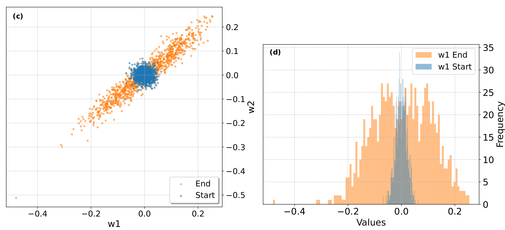
These outliers will lead to underflow or overflow during FP8 quantization when combined with delayed scaling, as the latter technique relies on the previous batch statistics for optimal hardware usage. In order to circumvent this issue, the authors introduce a new smooth SwiGLU activation function which incorporates channel scaling correction prior to FP8 casting, i.e.:
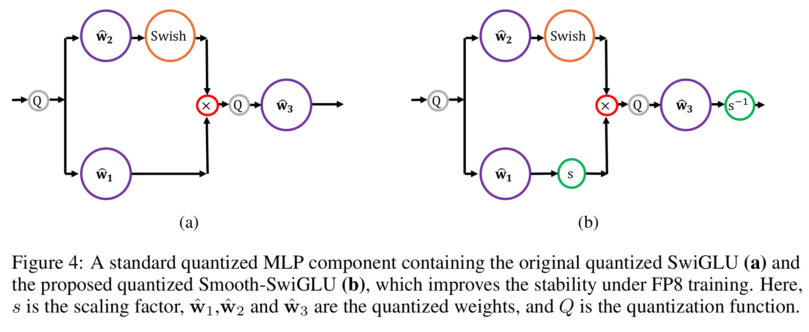
As presented by the authors, channel max-scaling is well suited to hardware accelerator as each chunk of data can be treated in parallel, and the resulting rescaling can be fused into the FP8 quantization of input activations \(x\) and weights \(w_3\) (third MLP layer):
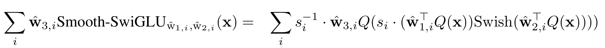
We note that the introduction of the smooth-SwiGLU activation preserves the overall FFN definition (from a mathematical point of view): additional channel scaling factors are compensated later in the network in the third MLP layer. We at Graphcore Research have proposed a similar approach in our recent Scalify work: incorporating additional scaling in neural networks to improve numerical stability while keeping the same model definition.
Results
Training experiments on a 7B Llama 2 model show the improved stability of FP8 LLM training when using the smooth-SwiGLU activation: training loss as well as zero-shot downstream tasks match the BF16 baseline. The use of smooth-SwiGLU only leads to a small drop in FP8 training acceleration, from 37% to 34%, due to the cost of channel rescaling.
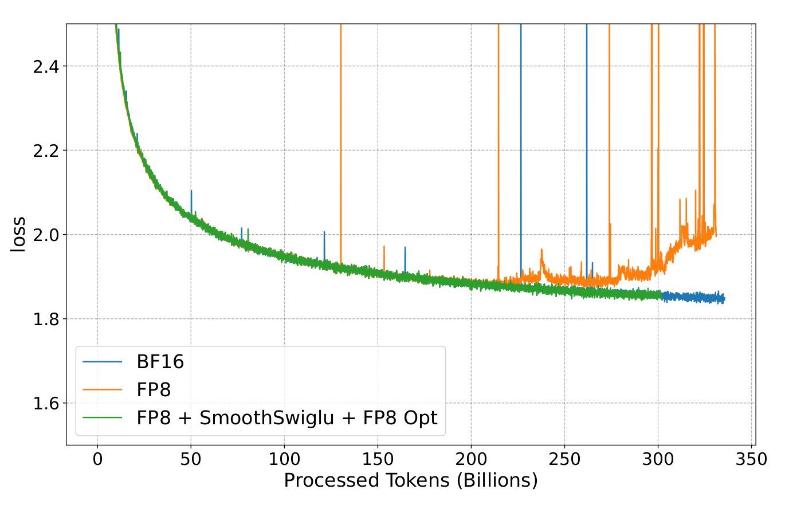
The authors also demonstrate that the FP8 E5M2 format can be used for storing the Adam optimizer second moment (as presented in previous works, the first moment can be represented using E4M3).
Generative Hierarchical Materials Search
The key idea
In recent years, machine learning based methods have increasingly been applied to assist the discovery of novel or improved materials with certain desired properties. In this paper, the authors present GenMS, an end-to-end generative model for crystal structures from language instructions. To that end, GenMS combines an LLM to process the user input, a diffusion model to generate molecular structures, and a GNN to predict the structures' properties and select the best candidates.
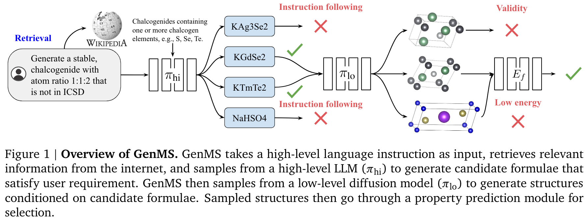
Their method
The authors argue that data linking the properties of materials to their crystal structure exists at two different abstraction levels: high-level information is available as text, while lower-level structural information such as atom positions exists in crystal databases. To reflect this, the generative model is split into two components with the chemical formulae of candidate materials serving as intermediate representation:
- An LLM trained on materials science knowledge from sources such as textbooks is used to sample chemical formulae that satisfy the user's directions. Retrieval augmentation is used to gain additional information and the formulae of crystals from existing databases are provided in the context to avoid generating known crystals.
- A diffusion model trained on crystal structure databases then generates crystal structures from these formulae. To improve the efficiency of the diffusion model, a simple representation using the 3D position and atom number of each atom in the crystal is adopted instead of e.g. a graph.
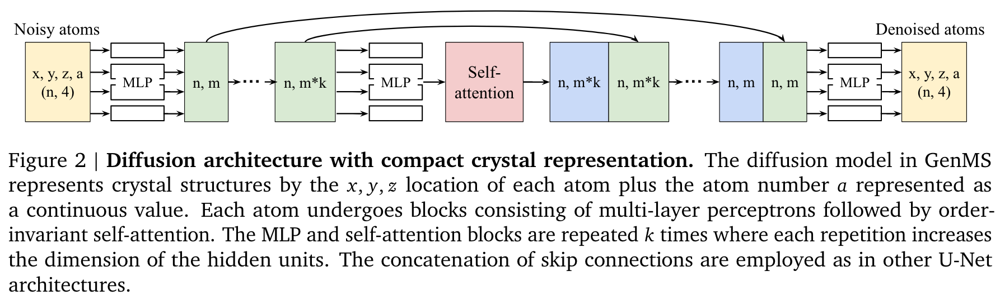
As a final step, a pretrained GNN is used to predict the formation energy and potentially other properties of the generated crystal structures and rank them based on this result.
During inference, a tree search is performed to identify low-energy structures that satisfy the natural language instructions. Here, the number of generated intermediate chemical formulae and crystal structures are hyperparameters to trade off compute cost for result quality.
Results
The main baseline presented in the study is an LLM that is prompted to directly, i.e. without the chemical formulae as an intermediate representation, generate crystal structures in the form of crystal information files. GenMS significantly improves on this baseline in all investigated quality criteria. Furthermore, the authors demonstrate that the model follows simple prompts such as requesting a metal or a material that is not present in a given list.
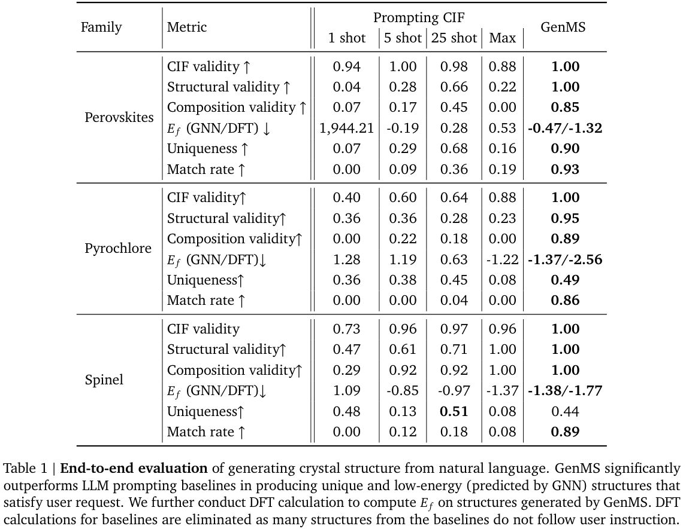
Takeaways
The possibility of sampling materials based on natural language instructions in an end-to-end fashion is a promising direction for improving materials generation and making it more accessible. However, the authors acknowledge a few shortcomings that require further work. In particular, more specific user input (e.g. "generate a semiconductor"), the generation of more complex crystal structures and the inclusion of further criteria such as synthesizability of the generated material remain challenging.
SOAP: Improving and Stabilizing Shampoo using Adam
The key idea
It turns out that the Shampoo optimiser (explained below), with some minor tweaks, is equivalent to running Adafactor in Shampoo's eigenspace. Since Adafactor is a rank=1 variant of Adam, the proposed method "SOAP" runs Adam in Shampoo's eigenspace instead.
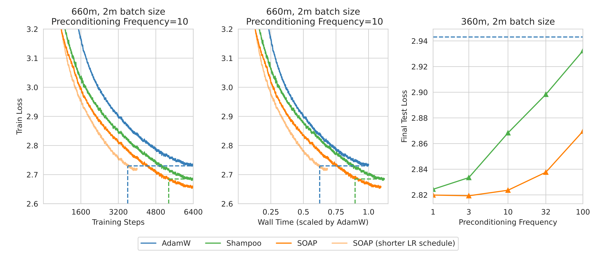
Background
Shampoo for matrices looks like this:
Where \(W \in \Re^{m \times n}\) is a weight matrix, \(L\in \Re^{m \times m}\), \(R\in \Re^{n \times n}\) are "preconditioners", behaving a bit like optimiser state and \(G\) is the minibatch gradient of a loss with respect to \(W\).
A slightly different variant is considered here: idealised Shampoo with power \(1/2\),
Note that this idealised variant takes an expectation over gradients from the dataset, rather than a running average as per practical implementations. The authors show that the last line is equivalent to idealised Adafactor in the Shampoo eigenspace:
Their method
Based on this link between Shampoo and Adafactor, the authors propose SOAP, which runs full Adam in the Shampoo eigenspace and increases efficiency by only updating the eigenvectors periodically (e.g. every 10 steps).
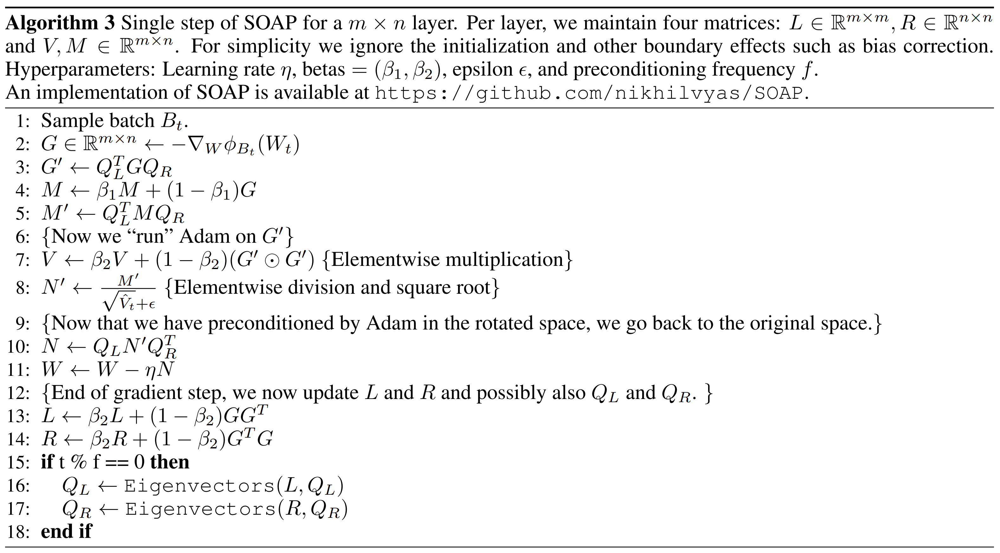
The running state of this technique includes \(L\), \(R\), \(Q_L\), \(Q_R\), \(M\) (in the weight space) and \(V\) (in the Shampoo eigenspace). For large projections, such as the final projection layer in an LLM, the corresponding \(Q_L\) or \(Q_R\) can be fixed to identity. If both are fixed, SOAP reproduces Adam.
Results
Results on language modelling (see figure above) show good step-efficiency of SOAP since it is based on Adam rather than Adafactor, and time-efficiency since the eigenvectors can be periodically updated without substantially harming performance. Like Shampoo, the extra optimisation cost can be reduced by using a large batch size.
Stepping back for a moment, I'm excited about this progress using Shampoo variants and am eager to see experiments over long training runs of LLMs. So I hope we'll see plenty more shower-related puns on arXiv over the next year!